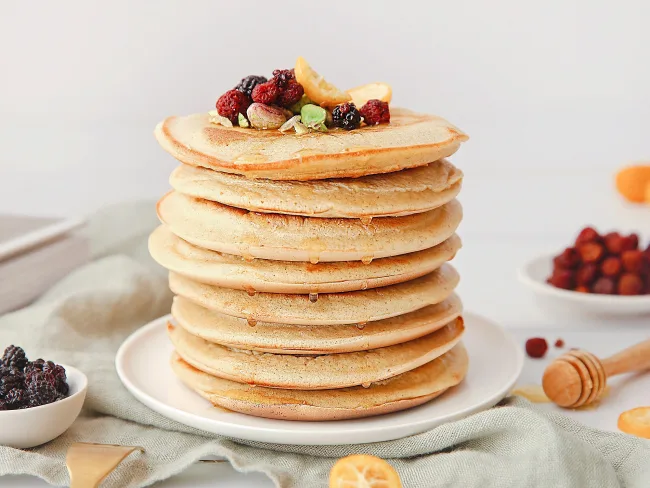

Pancakes à la farine complète
Indispensable du brunch dominical, revisités à l’infini et surtout délicieusement fluffy... On ne vous présente plus les fameux pancakes. Une version healthy, sans lactose, vegan... ça vous dirait ?
Voir plus...Veuillez clicker sur l'image qui correspond à votre recherche de recette.
Indispensable du brunch dominical, revisités à l’infini et surtout délicieusement fluffy... On ne vous présente plus les fameux pancakes. Une version healthy, sans lactose, vegan... ça vous dirait ?
Voir plus... Lasagne
saumon épinards
Lasagne
saumon épinardsVos enfants n'aiment ni les légumes verts ni le poisson ? Avec cette recette ultragourmande de lasagne saumon épinard, ils changeront d'avis !
Voir plus...Un sandwich sucré salé pour ceux qui aiment sortir des sentiers battus. C'est bon et on sait pourquoi !
Voir plus...